Meshedit++
Interactive editor for the point cloud to simplified mesh pipeline.
Overview
In this assignment, we write a ray tracer that samples rays of light and traces
them throughout a scene to create an image with physically-accurate lighting.
We build the ray tracer in five steps:
Generating rays which we "shoot" through pixels in the image and trace around the scene
Organizing primatives in the scene into an efficient hierarchy for testing intersections
Calculating the light at a traced point due to direct light sources or shadows
Calculating the light falling on the point from other directions
Implementing new material surfaces using new BSDFs (explained in part 5)
Part 1: Ray Generation and Scene Intersection
The fundamental mechanism driving a ray tracer is ray generation, where we loop
through all the pixels in the output image, generate random rays originating from a pixel's location,
and trace the rays throghout the scene backwards from the rays' passing through the pixel back until
its origination from a light source or until we decide otherwise (more about this in part 4).
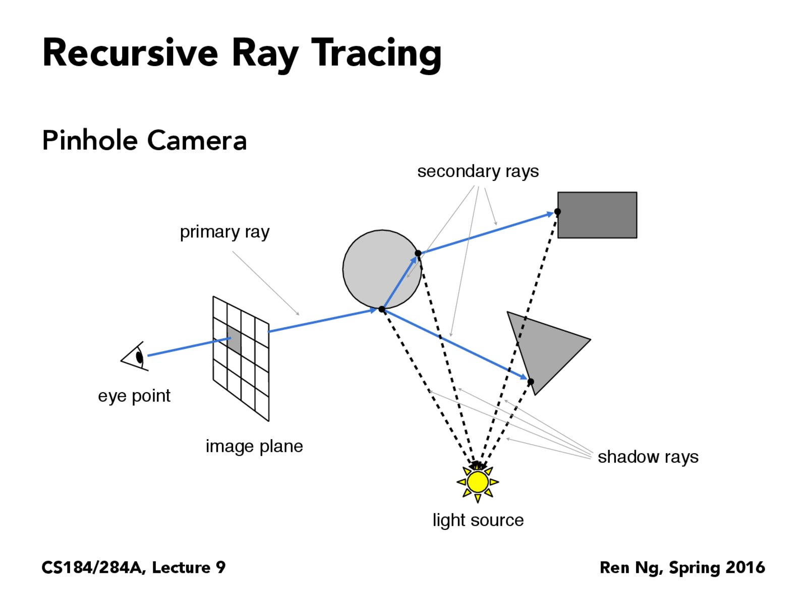
To generate rays, we use the following algorithm per pixel, shown in pseudocode:
Spectrum PathTracer::raytrace_pixel(size_t x, size_t y) {
for (int i = 0; i < num_samples; i++) {
random = generate random point in the pixel (x, y)
ray = ray beginning at random
ray.depth = max_ray_depth;
total_spectrum += trace_ray(ray, true);
}
return total_spectrum;
}
Running ray generation for each pixel, we color each pixel according to the how its
rays intersect material. For diffuse-spheres, we get this result:
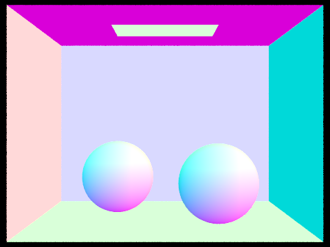
When tracing a ray, for each bounce, we check whether the ray intersects primatives, here
either a sphere or a triangle. To check whether a ray intersects a triangle, I implemented the
Möller-Trumbore algorithm, shown on the lecture slide below:
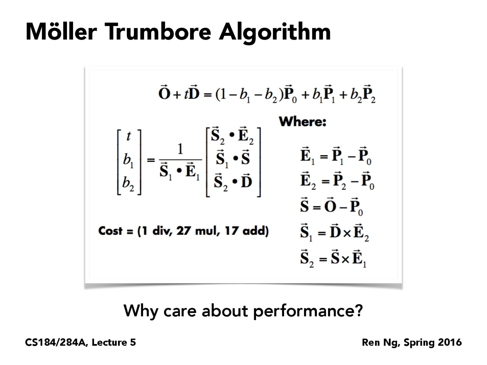
How does the Möller-Trumbore algorithm work? Essentially, we write the ray as a parametric
equation with origin O plus some multiple t of a direction vector D. This equation gives us a
point along the ray. This same point can also be written in barycentric coordinates, where that same
point is written as a linear interpretation of the triangle's points P_0, P_1, P_2.
Setting the ray equation and the barycentric coordinates equal, we have:
Then, the Möller-Trumbore algorithm solves matrix equation using
Cramer's rule.
Briefly, Cramer's rule says that we can solve for each x_i in matrix
equations of the form Ax = b by calculating the following:
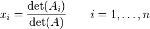
Thus we solve for the ray parameter t, and the barycentric coordinates b_1 and b_2
(from whence we can calculate b_0 since b_0 = 1 - b_1 - b_2). It then suffices
to check that all barycentric coordinates are valid (i.e. greater than 0) and that
the calculated ray parameter t is within the valid range for the ray.
Below is another image rendered with simple ray tracing:
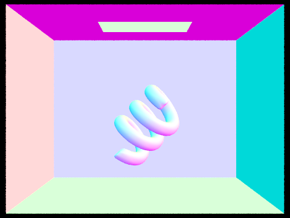
Part 5: Materials
Finally, we focus on modifying the BSDFs that we use for illumination.
Recall, that a BSDF is the ratio of how much light is reflected in an
outgoing direction given an incoming ray direction, and thus, the BSDF defines
the material qualities of a surface. For now, we focus on two types of surfaces:
a purely reflective surface, and a glass surface. To implement these BSDFs, we
first implement helper functions for reflecting rays and for
refracting rays. Each helper function calculates an outgoing vector
from an incoming one.
Reflecting rays: I used the reflection equation:
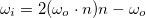
where:
omega_o: is the ray pointing towards the light source from the intersection
n: is the normal vector from the surface
Refracting rays: I used a derivation from
Snell's Law
found on Wikipedia:
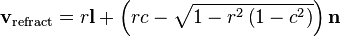
where:
r: is the ratio of the the materials' indices of refraction:
n_o / n_i
l: is -omega_o, which is the ray pointing from the light source into the intersection
c: is -n dot l, a coefficient with no special significance
n: is the normal vector from the surface
Mirror Surface BSDF: this BSDF is straightforward: we simply
reflect any incoming ray and return the reflectance of the material
divided by a cosine factor (the dot product of the incoming ray and the
surface normal).
Glass Surface BSDF: glass surfaces use both refraction
and reflection. I followed the algorithm below to calculate the BSDF:
Below are renderings of a scene with two spheres. The left sphere has a mirror
surface and the right sphere has a glass surface, so each sphere will use its
respective BSDF while rendering. Immediately below are six renderings, each with
max_ray_depth: 0, 1, 2, 4, 16, and 128, respectively. Note that,
with the samples per pixels constant, the noise of the image increases as we
increase the number of bounces.
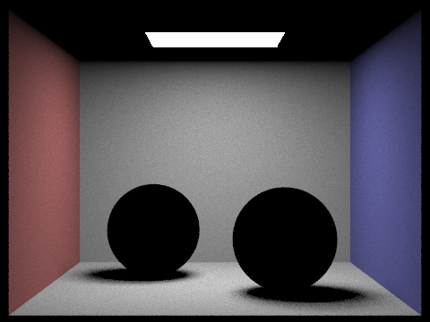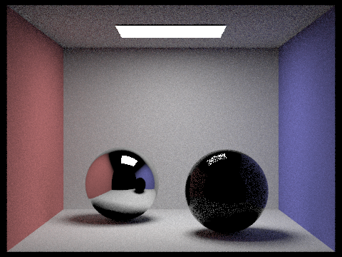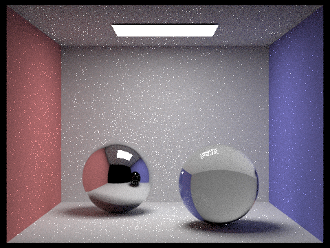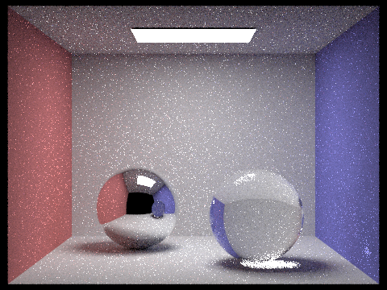
Finally, below are rendering of the same scene with max_ray_depth
set at 100 and number of samples per pixel set at: 1, 4, 16, 64, 512, 1024.
Fun fact: the last rendering took 1hr35min to render on an instructional machine,
and all we see is a tiny bit less noise.
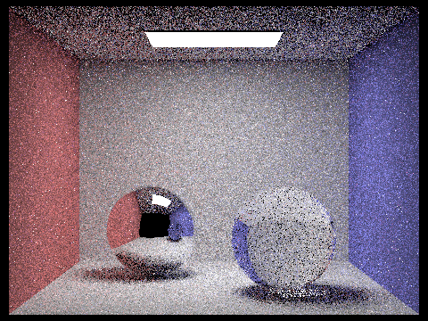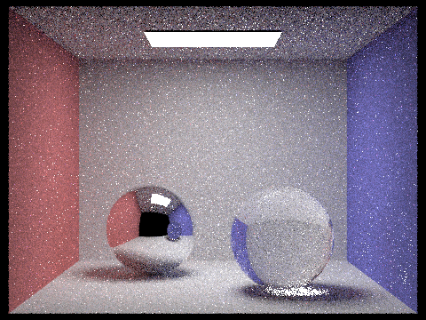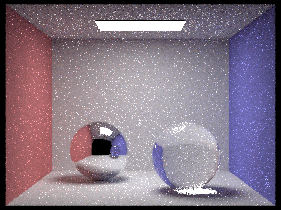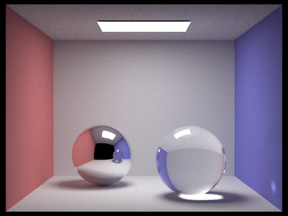